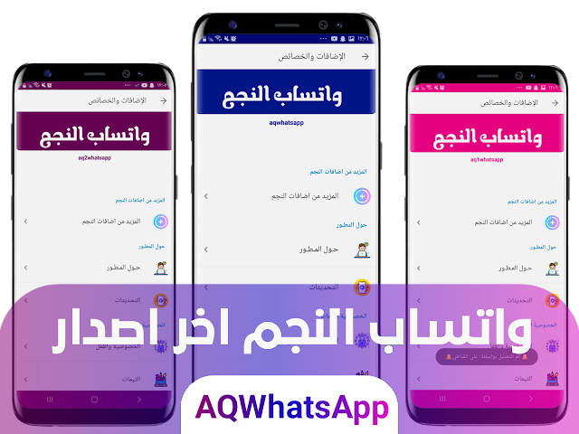

Hello, I'm Ali AlQubati
Whatsapp Maker
Video content writer and WhatsApp maker
Download

Additions
- تحديث قاعدة واتساب الى آخر اصدار
- إضافة خاصية فتح اكثر من حساب داخل الواتساب مثل التيليجرام
- تمديد عمر النسخة ثلاثة أشهر من تاريخ النشر
- حصريا تم إضافة ميزة الردود السريعة في صندوق الإرسال كما في واتساب الأعمال للتفعيل (من خلال الزر العائم في شاشة الدردشة / الإضافات والخصائص> المزيد من إضافات النجم)
- حصريا اضافة تصميم رهيب لخيارات الاضافات والخصائص بشكل انيق وجميل جدا.
- إضافة خيار لتغيير لون شكل الاضافات والخصائص الى اي لون تريد.
- إضافة خيار لتشغيل مقاطع الفيديو بالصوت عند مشاهدة الحالات / الستوري.
- تحسين ميزة المؤثرات المتساقطة لكي تناسب جميع الاجهزه.
- إصلاح جميع الانهيارات التي حدثت في الاصدار V10.00 بإذن الله.
- حصريا اضافة ميزة المؤثرات المتساقطة والمتحركة بشكلها الجديد والمميز في الشاشة الرئيسية وشاشة المحادثة مع امكانيه التفعيل والالغاء من الاضافات والخصائص.
- إضافة 30 ستايل جديد لألوان الشات ستايل مميز لألوان جديدة وجميلة جدا.
- إضافة ميزة الترجمة السريعة في صندوق الارسال بطريقة جديدة وسريعة للغاية.
- إضافة خيار جديد (اخفاء/اظهار) لايقونة مميزات الدردشة في صندوق الارسال.
- إضافة خيار جديد (اخفاء/اظهار) لايقونة الترجمة السريعة في صندوق الارسال.
- إضافة ستايلات لكلاً من الشاشة الرئيسية والمحادثة
- إضافة خيارات جديدة تجعل من واتساب النجم ضد الفيروسات
- إضافة مؤثرات جديدة متساقطة
- إضافة خاصية تبديل الحسابات كما في التيليجرام
- إضافة شرح عند تطبيق سيتم تأمين حسابك من الحظر
- تفعيل خيار الرسائل ذاتية الاختفاء
- إضافة دائرة بجانب الاسم في الصفحة الرئيسية لمعرفة من متصل الان
- إضافة علامة زرقاء عند الرد على المجموعات (يتم تمكينها تلقائيًا باستخدام علامة زرقاء عادية في خيار الرد)
- إضافة تفعيل الثيم عبر ملف ال ZIP
- إضافة نسخ جزء من النص عبر التحديد على الرسالة المطلوبة ثم خيارات ثم نسخ جزء من النص
- إضافة البحث المتقدم { يمكنك البحث بأختبار البحث عن( صورة’صورة متحركة,فيديو’مستند’روابط’مقطع صوتي)}
- إضافة خيار داخل الرسائل المؤرشفة لظهور الرسائل الجديدة المؤرشفة داخل قائمة الرسائل المؤرشفة
- إضافة ضغطة طويلة على محتوي الستوري لنسخ المحتوى
- تحسين الوضع الليلي (الداكن) في إعدادات بلس
- إضافة واجهة اندرويد 10
- إضافة المؤثرات لاقسام الشاشة الرئيسية وتمرير
- إضافة خيار رسالة جماعية للمجموعات بشكل جديد ومييز وسهل الاستخدام
- إضافة تحسين الزر العائم المميز في شاشة المحادثه
- إضافة خيار اخفاء الزر العائم بالمحادثة
- إضافة ثيم افتراضي جديد (ليلي\نهاري)
- إضافة تصاميم جديدة لستايل حالات انستجرام
- إضافة تصميم جديد لستايلات بار التنقل السفلي